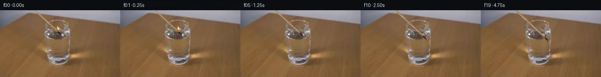

![首帧]()

Round 00
2026-11-05T11:41:41.675249+00:00像素候选变化代码 +265/−0inspection 更新
pixels 11ec8ebcfc7ae146 · code 0d62f94d42ec2ed9
查看本轮 generate.py 真实 diff
--- previous/generate.py
+++ current/generate.py
@@ -0,0 +1,265 @@
+"""Single-image pixel continuation; all scene assets come from first_frame.png.
+
+No image display, external model, network, or rendering engine is used.
+"""
+from pathlib import Path
+import json
+
+import numpy as np
+from PIL import Image, ImageDraw
+from scipy.ndimage import map_coordinates, gaussian_filter, binary_dilation
+from scipy.sparse import lil_matrix
+from scipy.sparse.linalg import spsolve
+
+from artifact_io import save
+
+ROOT = Path(__file__).resolve().parent
+H, W = 144, 256
+Y, X = np.mgrid[:H, :W].astype(np.float64)
+SOURCE = np.asarray(Image.open(ROOT / 'first_frame.png').convert('RGB'))
+A = SOURCE.astype(np.float64)
+
+
+def sample(array, sx, sy):
+ if array.ndim == 2:
+ return map_coordinates(array, [sy, sx], order=1, mode='nearest')
+ return np.stack([map_coordinates(array[..., k], [sy, sx], order=1,
+ mode='nearest') for k in range(3)], -1)
+
+
+def harmonic_inpaint(image, mask):
+ """Solve the local discrete Laplace equation using existing RGB boundaries."""
+ coords = np.argwhere(mask)
+ indices = np.full(mask.shape, -1, dtype=int)
+ indices[mask] = np.arange(len(coords))
+ matrix = lil_matrix((len(coords), len(coords)))
+ rhs = np.zeros((len(coords), 3))
+ for i, (y, x) in enumerate(coords):
+ neighbours = [(ny, nx) for ny, nx in ((y-1, x), (y+1, x),
+ (y, x-1), (y, x+1))
+ if 0 <= ny < H and 0 <= nx < W]
+ matrix[i, i] = len(neighbours)
+ for ny, nx in neighbours:
+ j = indices[ny, nx]
+ if j >= 0:
+ matrix[i, j] = -1
+ else:
+ rhs[i] += image[ny, nx]
+ result = image.copy()
+ result[mask] = spsolve(matrix.tocsr(), rhs)
+ return result
+
+
+def shaft_center(y):
+ return 74.65 + 1.065 * y
+
+
+def shaft_alpha(x, y):
+ side = np.clip((3.25 - np.abs(x-shaft_center(y))) / 1.5, 0, 1)
+ end = np.clip((45.25-y)/1.2, 0, 1)
+ return side * end
+
+
+def capsule_alpha(x, y, p0, p1, radius=1.55):
+ vx, vy = p1[0]-p0[0], p1[1]-p0[1]
+ q = np.clip(((x-p0[0])*vx + (y-p0[1])*vy)/(vx*vx+vy*vy), 0, 1)
+ dist = np.hypot(x-p0[0]-q*vx, y-p0[1]-q*vy)
+ return np.clip((radius+.65-dist)/.95, 0, 1)
+
+
+# Isolate the original flame through its measured warm core and feathered border.
+flame_body = ((X-123.8)/4.25)**2 + ((Y-39.1)/6.0)**2
+flame_lower = ((X-124.0)/3.4)**2 + ((Y-44.0)/1.35)**2
+flame_mask = ((flame_body < 1) | (flame_lower < 1)) & (Y >= 33)
+flame_mask &= (X >= 119) & (X <= 129) & (Y <= 45)
+UNLIT = harmonic_inpaint(A, flame_mask)
+FLAME_DELTA = A - UNLIT
+
+wood_alpha = shaft_alpha(X, Y)
+char_alpha = capsule_alpha(X, Y, (122.1, 44.6), (129.7, 52.8))
+match_alpha = np.maximum(wood_alpha, char_alpha)
+# Include only the measured source object's support in the stationary cleanup.
+cleanup = (match_alpha > .015) | flame_mask
+BACKGROUND = harmonic_inpaint(UNLIT, cleanup)
+
+# Recover a foreground color that recomposes the observed source over its bed.
+MATCH_COLOR = BACKGROUND + (UNLIT-BACKGROUND)/np.maximum(match_alpha[..., None], .08)
+MATCH_COLOR = np.clip(MATCH_COLOR, 0, 255)
… diff truncated; 178 more lines …